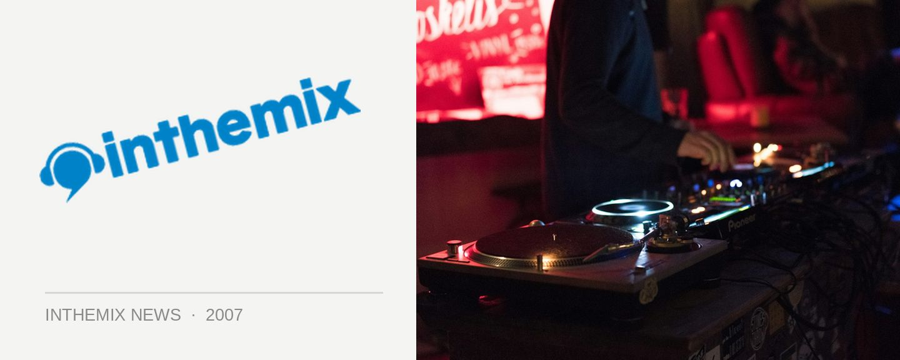

Ben Korbel returns for Rubix this Friday
Sydney underground house legend and Sounds main man Ben Korbel has finally made his way back from Ibiza, and he’ll be playing his first gig since his return from his ‘Endless Summer’ when he rocks up to Rubix at Yu this Friday night. As well as playing gigs at the massive We Love… events at Space, he was ITM’s official correspondent for its Ibiza section that you can check out HERE.
Thus Friday night there will also be performances from Stick Figures, Telefunken, Matttt & Tomass, Tekneex and the Rubix crew have promised that a bunch of internationals are coming up in November including Steve Rachmad from the Netherlands and none other than Stacey Pullen, Detroit techno legend extraordinaire!
Get on down to Rubix at Yu this weekend featuring Ben Korbel, doors open 10pm.